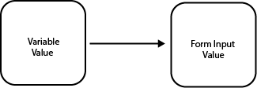
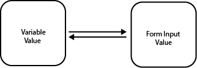
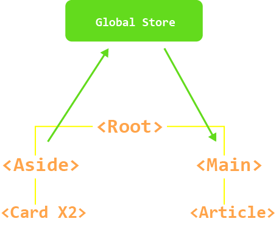

Welcome to the velte documentation.
v1.0.4
Release Information
NOTE : The curent version of velte is
v1.0.4.
| Support Stage | Support Timing | Details |
|---|---|---|
| Active | 3 Months | Regularly-scheduled updates and patches |
| Long-Term(LTS) | 6 Months | Critical fixes and security patches |
Versions Released
| Velte Version | Support Stage | Released |
|---|---|---|
v1.0.4 | Active | 2022-06-11 |

API REFERENCE
Global API
VelteElement()
VelteElement(nodeName, traits, ...children)
For details, see guide here
VelteRender()
VelteRender(component, containerNode)
For details, see guide here
VelteComponent : Class
class VelteComponent{...}
Base class all your custom components extended from thevelte base class component
For details, see guide here
VELTE_VERSION : String
String VELTE_VERSION
Check current version of velte.
Lifecycle Hooks
VelteCreated()
Component created lifecycle hook
For details, see guide here
VelteMounted()
Component mounted lifecycle hook
For details, See guide here
VelteUpdated()
Component updated lifecycle hook
For details, See guide here
VelteDestroyed()
Component destroyed lifecycle hook
For details, See guide here
Reactivity
setState() : Class Component
this.setState({oldState, newState})
For details, see guide here and here
reactToState() : Class Component
this.reactToState()
For details, see guide here
Misc
render() : Class Component
Method inherited from the
velte base class component
For details, see guide here
VelteReturn() : Class Component
Method inherited from the
velte base class component
For details, see guide here

What is Velte?
Velte is just another small, fast and easy-to-use frontend Javascript library with a declarative and component-based model for developing User Interfaces. velte in no way tries to reinvent the wheel, It takes the wheel and makes it easier to roll with. In summary, It's your typical modern framework or library but friendlier.
Why use Velte?
I have no idea. What started off as a joke with friends ended up with me rewriting the entire library to improve and implement more features. Emmanuel Oni (creator)
Beginner friendly
If you're Just starting out as a frontend or fullstack developer, velte can be great practice.
Simple and fast
Weighing in at around 3 KB (minified and compressed), velte helps keep your bundle size small. And rendering is blazing fast, because velte touches only the dynamic parts of your UI when updating — no need to rebuild an entire VDOM tree.
Performant Components
Basically, you can have hundreds of components and still achieve great performance.
Scalable
For small to medium sized web applications.
Extensive
Velte can be used in conjunction with other libraries to increase productivity.
Declarative
This helps make your code easier to understand and simpler to debug.
Familiar Syntax
Velte's syntax is inspired by React and Lit.js
Velte Class Component Example
import {VelteComponent,VelteElement} from "velte"
export class GettingStarted extends VelteComponent{
constructor(traits){
super(traits)
this.state = {}
}
render(){
return(
<div className="card">
<h2 className="title"><i className="fas fa-book"></i> Getting Started</h2>
<p>You should read the documentation, it covers every bit of the library.</p>
<a href="./test.html" v-attr:role="button" className="button">Read the Docs</a>
</div>
)
}
}
Quick Start
To get up and running with velte, grab the velte-starter-kit.
NOTE : You can download the velte docs as a
With Build Tools
A build setup allows us to use compile velte apps during development or for production. The official velte build setup is based on webpack, a frontend build tool that is used to bundle assets and scripts into static assets.
Other Build Tools
Other build tools can be used to compile velte apps :
NOTE : These build tool would have to be configured manually to compile velte applications. Support for these tools would be added by default in later versions of
velte-starter-kitvite would probably come first.
Installation
Custom Project
If you already have a project and you want to use velte in that project, run
npm install velte
This will install velte to your current project.
Starter Kit
If you are using the starter-kit, run
npm install
This will install all required dependencies including velte.
npm run velte:serve
This would serve the app, used during development.
npm run velte:build
This would build the app for production in the dist folder.
Velte CDN
No need to use the starter kit if you don't want to, velte is progressive. If you have an existing website you want to add functionality to or you want to build a small project, you can with the velte CDN. Just include the script tag:
<script src="http://velte.es.js"></script>
Velte CLI
NOTE : This is an upcoming feature, that enables you to generate a custom velte project with options for choosing templating, build tool and more.
Requirements
An average knowledge of these are important when making velte applications.
- HTML
- CSS
- Javascript

Creating a Velte Application
velte applications are structured with components made with JSX and Javascript.
//app.js
const app = <h1>This is JSX</h1>
JSX is simply HTML in Javascript. To use JSX in velte, you need to import VelteElement from velte.
//app.js
import {VelteElement} from "velte"
const app = <h1>This is JSX</h1>
VelteElement()
When you write JSX it gets converted to VelteElement which returns hyperscript(), then this is added to the VDOM then mounted to the DOM.
//JSX
const app = <h1>This is JSX</h1>
//VelteElement
VelteElement("h1", null, "This is JSX")
Mounting The App
NOTE : You should always import
VelteRenderfromveltewhen creating an app instance.
When you call VelteRender() in a .js file, we are creating an app instance to render to the DOM.
<!--HTML File VelteRender Renders to-->
<div id="app"></div>
//document.getElementById("app") references the element with an ID "app"
//so this should be unique
VelteRender(app, document.getElementById("app"))
NOTE : You are not limited to a single app instance per html page, multiple application instances can co-exist.
The Root Component
What if you have many JSX tags or components to render?
//app.js
//this won't work
import {VelteElement,VelteRender} from "velte"
const app1 = <h1>This is JSX</h1>
const app2 = <h1>This is JSX</h1>
VelteRender(app1, document.getElementById("app"))
VelteRender(app2, document.getElementById("app"))
The first time you call VelteRender(), we call the reconcile() function on a real DOM node in our case document.getElementById("app"). When you call the VelteRender() more than once on the same element, you are calling it with the VDOM node the first VelteRender() returns when called for the first time. So how do we fix this problem? Root Components.
Every app requires a Root Components that can contain other components.
//app.js
//this will work
import {VelteElement,VelteRender} from "velte"
const app1 = (
<div>
<h1>This is JSX</h1>
<h1>This is also JSX</h1>
</div>
)
VelteRender(app1, document.getElementById("app"))
NOTE : We wrapped the two
<h1>tags in a<div>because, when adding multiple tags to JSX snippet it needs to be grouped.
Velte's syntax
Velte uses an HTML-based template syntax JSX that allows you to declaratively bind the rendered DOM to the underlying component instance's data. All velte templates are syntactically valid HTML that can be parsed by spec-compliant browsers and HTML parsers.
Under the hood, velte compiles the templates into highly-optimized JavaScript code. Combined with the reactivity system, velte intelligently figures out the minimal number of components to re-render and apply the minimal amount of DOM manipulations when the app state changes.
JSX
JSX is an open standard and it is not restricted to React in any way so we can use it velte without React and it is fairly easy to understand. JSX is simply HTML in Javascript but with superpowers.
Text Interpolation
The most basic form of data binding is text interpolation using the "Mustache" syntax.
<span>counter : {count}</span>
The mustache tag gets replaced by the value of count property from the corresponding component instance. It will also be updated whenever the count property changes.
<p>Message : {text}</p>
text can also be a trait passed into the corresponding component instance.
Mustaches can also be used inside HTML attributes. They can refer to variables or functions.
<!--variable-->
<h1 className = {logo}>LOGO</h1>
<!--function-->
<h1 className = {returnLogo()}>LOGO</h1>
NOTE : single tag elements in velte and JSX must end with
/. Like<img/>,<br/>,<hr/>
Using JavaScript Expressions
velte supports the full power of JavaScript expressions inside Mustaches:
{number + 20}
{answer : "YES" ? "NO"}
{text.reverse()}
{increment()}
{()=>console.log("IIFEs")()}
These expressions will be evaluated as JavaScript in the data scope of the current component instance.
Expressions Only
JSX only supports Javascript expressions and not statements or definitions.
//This won't work
{let bar = "foo"}
{if (a) {return a}}
Directives
Directives are special traits some with the v- prefix. v for velte.
These directives are used to pass in trait attributes on an element.
v-attr for data traitv-on for event trait
<h1 v-attr:role="button" v-on:click={doSomething()}></h1>
Classes and Styles
Classes
You can add class names directly to your HTML elements.
<p className = "myStyleName"></p>
Styles
You can also add inline styles directly to your HTML elements.
<p style = {{color:"red"}}></p>
<img src="./image.png" width={800} height={180}/>
Reactivity
NOTE : velte's reactivity comes from
Velte.__updater()in@velte/domwhich takes in theoldVnodeandnewVnodeto render after diffing this makes velte intelligently choose what parts of your components needs to be re-rendered, which out re-rendering everything.
Declaring Reactive State
NOTE : Before going through this, you should understand how velte class components works.
this.setState()
The responsibility of how to update the DOM whenever you call this.setState() lies in @velte/dom rather than @velte/core. When this.setState() is called, velte calls Velte.__updater() under the hood.
this.setState({count: this.state.count + 1})
The value of count is updated and re-rendered where called.
render(){
return <p>{this.state.count}</p>
}
this.reactToState()
What if you want to reactively re-render a property's change not in this.state?
call this.reactToState() on property change.
NOTE : A good example of this is when you want to react to state change on the global store.
//global stores are more complicated than this
const globalStore = 1
...
render(){
const onChange = ()=> {
globalStore = globalStore + 1
this.reactToState() //this would call Velte.__updater() to re-render change
}
return (
<p>{globalStore}</p>
<button v-on:click={this.onChange}>change</button>
)
}
NOTE : Basic functions can live inside the
render()method
NOTE :
thisis called before accessing the different methods because we usethisto reference the current component instance.
Traits
A common need for setting traits is manipulating an element's class list, its inline styles and data attributes.
NOTE : Traits are just like attributes that get passed into elements and components.
Class Trait
These are simply css classes defined for elements like <p>, <div>, <img>.
<p className = "classTrait"></p>
When using these classes, it is common to import them from css files.
/*style.css*/
.classTraits{
color: red;
}
import "./style/style.css"
const App = <p className = "classTrait"></p>
The class names can also be stored in variables.
import "./style/style.css"
const myVariable = "classTraits"
const App = <p className = {myVariable}></p>
Style Trait
These are inline css styles defined for elements like <p>, <h1>, <input>.
const App = <p style = {{color:"red"}}></p>
The styles can also be stored in variables as objects.
import "./style/style.css"
const myStyleVariable = {color: "red"}
const App = <p style = {myStyleVariable}></p>
Attribute Trait
These are traits that are not default HTML attributes like href or src. For example, when using a 3rd party library for styling HTML elements, It can have custom attributes for styling them.
//role would be passed in a data trait
const App = <a href="http://lit.dev" role = "button">Go to Lit's Website</a>
role is a custom attribute, but by default velte will read this as a component trait. To fix this you need to tell velte it's an attribute trait.
//role would be passed in an attribute trait
const App = <a href="http://lit.dev" v-attr:role = "button">Go to Lit's Website</a>
v-attr: directive stands for velte-attribute, this would tell velte it's an attribute trait.
Event Trait
These traits are event handlers, when a user performs an action like clicking on buttons, double clicking on buttons, hovers on images and even submitting a form, these traits are used to perform actions based on what the user's actions.
To register an event trait on an element use the v-on directive which stands for velte-on
const App = <button v-on:click={()=>console.log("You clicked me")}>Click me</button>
NOTE : Use the Mustache syntax to pass in a callback function to perform an action:
{()=>actionFunction()}, these can be methods in aclass componentor plainJavascriptfunctions
//using plain Javascript functions
function sayHi(){
console.log("Hi")
}
const App = <button v-on:click={()=>sayHi()}>Click me</button>
Data Trait
These traits are commonly used to pass in a data into a component, it's what they where build for. They are not attributes or directives, just plain definitions. Data traits are commonly refered to as traits because they define properties of components or common elements.
//passing data traits into component
const App = <CustomComponent myTrait="Hello World"/>
NOTE : The code snippet above passes
"Hello World"into theCustomComponentcomponent.
Conditional Rendering
This is literally what it sounds like, "I would only render something when a condition is true, if not i'll render something else". This makes our web apps more dynamic.
Example: rendering the dashboard when someone is logged in or a session is started, if a session is NOT started render the home page.
The <If>...</If> tag
This tag is used to render or perform actions when a certain condition is met. It's like your regular If statement but with tags.
//JSX for velte syntax
const App = (
<If condition = {"insert condition here"}>
//perform action here
</If>)
//Javascript
if("insert condition here"){
//perform action here
}
NOTE : The
conditiontrait is used to pass JavaScript expressions inside Mustaches to the<If>tag for use.
Full example:
//This renders the "Dashboard" component if login is true
const login = true
const App = (
<If condition = {login}>
<Dashboard/>
</If>)
Javascript expressions are welcome.
//This also renders the "Dashboard" component if login is true
const login = true
const App = (
<If condition = {login == true}>
<Dashboard/>
</If>)
The <When>...</When> tag
This tag functions exactly like the <If/> tag. It is used along with the <Otherwise> tag for conditional rendering.
//The <When> tag functions like the <If> tag
const number = 0
const App = (
<When condition = {number == 0}>
{number = number + 1}
</When>)
The <Otherwise>...</Otherwise> tag
This tag functions exactly like an else statement. It is used along with the <When> tag for conditional rendering.
//The <Otherwise> tag will execute it's body.
const number = 1
const App = (
<Choose>
<When condition = {number == 0}>
{number = number + 1}
</When>
<Otherwise>
{()=>console.log("number is not 0")}
</Otherwise>
</Choose>
)
The <Choose>...</Choose> tag
This tag is used to house the <When> and <Otherwise> tag.
//The <Choose> tag houses <When> and <Otherwise>
const login = true
const loginDashboard = ()=>{
return <Dashboard/>
}
const promptLogin = ()=>{
return <Homepagelogin/>
}
const App = (
<Choose>
<When condition = {login}>
{()=>loginDashboard()}
</When>
<Otherwise>
{()=>promptLogin()}
</Otherwise>
</Choose>
)
NOTE : You can have multiple
<When>tags and only ONE<Otherwise>in one main<Choose>this would simulate aif...else if...elsecondition or aswitch statement
//Multiple cases in velte JSX syntax
const message = "Hello World"
const App = (
<Choose>
<When condition = {message == "Hi"}>
{()=>console.log(`${message}`)}
</When>
<When condition = {message == "Hello World"}>
{()=>console.log(`${message}`)}
</When>
<Otherwise>
{()=>console.log(`${message}`)}
</Otherwise>
</Choose>
)
//Multiple cases in Javascript
const message = "Hello World"
if(message == "Hi"){
console.log(`${message}`)
}else if (message == "Hello World"){
console.log(`${message}`)
}else{
console.log(`${message}`)
}
On an unrelated note :
The <with>...</With> Tag
This tag is used to assign local variables :
<With foo={ 47 } bar={ "test" }>
<span>{ foo }</span>
<span>{ bar }</span>
</With>
List Rendering
This is simply looping through an array of items for rendering or performing functions.
The <For>...</For> tag
This tag performs the action of the for loop and while loop, it is used for looping over arrays to get indexes, render array elements, perform actions based on the array element or what you want to do with the array elements.
//<For> performs the action of the for loop and while loop
const names = ["Mike", "John", "Eliot"]
const App = (
<For each="name" of={names}>
{()=>console.log(name)}
</For>
)
NOTE : The
eachtrait is a reference to the current item of the array which can be used within the body as variable. Theoftrait is used to define the array to iterate over. This can also be a collection (Immutable.js) or anything on which a function with the name map can be called.
//Output same as before
const App = (
<For each="name" of={["Mike", "John", "Eliot"]}>
{()=>console.log(name)}
</For>
)
Rendering to DOM
The <For> tag can also return valid JSX for rendering to the browser.
const App = (
<For each="name" of={["Mike", "John", "Eliot"]}>
<h1 key={name}>{name}</h1>
</For>
)
NOTE : The
keytrait is used to pass in a unique id that uniquely identifies the element.
//alternative usage for the <For> tag
const item = [
{"id":1,"title":"Game of thrones"}
{"id":2,"title":"Flight (2012)"}
]
const App = (
<For
of={items}
body={(item, index) => (
<span key={item.id}>
{index}. {item.title}
</span>
)}
/>
)
this.VelteReturn()
VelteReturn() can be used to return out of loops in components.
//inside class component
render(){
return(
<div>
<For each="name" of={["Mike", "John", "Eliot"]}>
{()=>console.log(name)}
<If condition={name == "John"}>
{()=>this.VeltReturn()}
</If>
</For>
</div>
)
}
NOTE : calling return directly inside a
<For>tag doesn't work and returnsundefinedif returning JSX.
Event handling
when a user performs an action like clicking on buttons, double clicking on buttons, hovers on images and even submitting a form, our application can react to those actions known as events.
To get started with event handling in velte we use event traits
All event traits in velte start with the v-on directive which stands for velte-on.
NOTE : You cannot use
velte-onas a replacment forv-on
Mouse Events
v-on:click
v-on:doubleClick
v-on:contextMenu
v-on:mouseDown
v-on:mouseEnter
v-on:mouseLeave
v-on:mouseMove
v-on:mouseOut
v-on:mouseOver
v-on:mouseUp
v-on:drag
v-on:dragEnd
v-on:dragEnter
v-on:dragExit
v-on:dragLeave
v-on:dragOver
v-on:dragStart
v-on:drop
Keyboard Events
v-on:keyDown
v-on:keyPress
v-on:keyUp
Clipboard Events
v-on:cut
v-on:copy
v-on:paste
Form Events
v-on:input
v-on:submit
v-on:change
Focus Events
v-on:focus
v-on:blur
UI Wheel Events
v-on:scroll
v-on:wheel
Selection Events
v-on:select
Touch Events
v-on:touchCancel
v-on:touchEnd
v-on:touchMove
v-on:touchStart
Form input Binding
You can bind form input traits like value to variables. When this is done, the value of the variable would be assigned to form input trait.
One - way data binding
This is binding the value of a variable to the value of the form input. If the varaible changes the value of the form input changes too. But if the form input value changes first, the variable value will NOT change. So the relationship here is one-way data binding

How to implement this in velte?
//one-way data binding in velte
const variableValue = "Velte is ok-ish, right?"
const App = (<input name="message" value = {variableValue}/>)
Two - way data binding
This is binding the value of a variable to the value of the form input and vice-versa. If the variable value changes the form input value also changes and if the value of the form input changes, the variable value changes too. So the relationship here is two-way data binding
NOTE : In velte, two-way data binding is acomplished using the
v-on:changeevent trait.

//two-way data binding in velte
const variableValue = "Velte is awesome"
function handleChange(e){
e.preventDefault()
variableValue = e.target.value
}
const App = (
<div>
<p>{variableValue}</p>
<input name="message" value = {variableValue} v-on:change={()=>handleChange()}/>
</div>
)
Lifecycle Hooks
NOTE : To use lifecycle hook in velte, it has to be inside a class component and NOT a function component, These hooks are inherited from
VelteComponent: class.
Every velte component instance goes through a series of initialization steps when it's created, mounted, updated and destroyed. Thus creating a lifecycle for every component. This gives you the ability to input code at any stage of the lifecycle to make components dynamic. For example, performing API calls in the VelteCreated() hook before the component is mounted.
VelteCreated()
This hook is called after the component instance has set up reactive data and methods before the component is mounted.
//Inside a class component
VelteCreated(){
console.log("Component Created")
}
VelteMounted()
This hook is called after all child components (if any) have been mounted and it's DOM tree has been created and inserted into the root component (if any).
//Inside a class component
VelteMounted(){
console.log("Component Mounted")
}
VelteUpdated()
This hook is called after there is an update to it's DOM tree due to reactive state change.
//Inside a class component
VelteUpdated(){
console.log("Component Updated")
}
WARNING : Do not mutate component states in the
VelteUpdated()hook, this will likely lead to an infinte update loop.
VelteDestroyed()
This hook is called after all it's child components (if any) have been destroyed and it's reactive effects have been stopped.
//Inside a class component
VelteDestroyed(){
console.log("Component Destroyed")
}
NOTE : More lifecycle hooks would be implemented in later versions of velte.

Velte components
NOTE : You should always import
VelteElementandVelteComponentfromveltewhen using velte components
Comonents allows us to split the UI into independent and reusable pieces. It's common for an app to be organised into a tree of nested components.
Velte supports function components and class components

NOTE : In velte, very component is made up of custom content and functionality.

From the diagram above, every velte component is made up of states, hooks, methods, and templates
Calling Components
Calling components is just like calling a HTML element like <img>
const App = <MyComponent/>
MyComponent is the name of the component.
Functional Components

These components are created with functions.
function functionComponent({name}){
return (
<div>
<h1>I can render stuff too...</h1>
<p>Hello there, {name}</p>
<AnotherComponent/>
</div>
)
}
const anotherFunctionComponent = ({age})=>{
return (
<div>
<h1>I can also render stuff too...</h1>
<p>Your age is {age}</p>
<functionComponent/>
</div>
)
}
Function components only accept traits and return JSX for rendering.
They can be used as root components
Class Components

These components extends VelteComponent: class, so they inherit all the functions of the base velte component from velte.
NOTE : class component names must always start with a capital letter, its still a class afterall.
Inherited Functionality
Lifecycle hooks
constructor()
The constructor() is a powerful function in velte components.
They can define states and component methods. They also add data traits functionality to class components.
//inside class component
constructor(){
//define states
this.state = {
data : 0
}
//define methods
this.increment = () =>{
this.setState({count: this.state.count + 1})
}
}
render() : Inherited
The render() method inherits from VelteComponent: class.
This method returns JSX to be rendered.
//inside class component
render(){
return(
<p>Hello velte</p>
)
}
Component states
How do we store data in a component? with states!!!
states help store data for use in a component, this can be for displaying information or using the data to perform calculations or sending requests to servers...
//inside class component constructor
this.state = {
data : value
}
Think of states like a local store for variables, where data is the name of the variable and value is the variable value.
//inside class component constructor
this.state = {
name : "Joe",
age : 23
}
NOTE :
statescan also contain objects.
//inside class component constructor
this.state = {
person : {name : "Joe", age : 23}
}
setState()
To update a state variable we use setState() method inside class components.
export class Counter extends VelteComponent{
constructor(traits){
super(traits)
this.state = {
count : 0
}
this.increment = () =>{
this.setState({count: this.state.count + 1})
}
}
render(){
return(
<p>{this.state.count}</p>
<button v-on:click = {this.increment}>Increment</button>
)
}
}
NOTE :
this.state.countaccesses the count variable inside the "state store".
NOTE :
thisis called before accessing the different methods because we usethisto reference the current component instance.
NOTE : For scalability, your components would live in another folder
componentsif using thestarter-kit. You would have to export the component by adding theexportkeyword.
Component hooks
What if I want to perform various functions during the lifecycle of my components.
You can, velte supports different hooks that run during the lifecycle of your components
Lifecycle hooks
Component methods
Methods are functions in classes, used to perform a certain grouped task without repeating code.
In velte class components methods do the exact same thing. Methods in velte live in the constructor() function
//inside class component
constructor(...){
...
//methods go here
}
NOTE : Basic velte component methods (functions) can live inside the
render()method
//inside class component
render(){
//methods go here
return()
}
Using methods inside a class component :
export class Greet extends VelteComponent{
constructor(traits){
super(traits)
this.state = {
show : true
}
//this is a method
this.display() =>{
return <p>Hello</p>
}
}
render(){
//this is a basic function
const greet = ()=>{
return <h1>Greetings</h1>
}
return(
<If condition={this.state.show}>
{()=>this.display()}
</If>
{this.greet}
)
}
}
NOTE : If we don't add
()when calling methods or functions, no need to use a callback function to call your required method or function.
Method Parameters and Arguments
When declaring a method, you can pass in parameters just like a Javascript function.
When calling the method, you can pass arguments for the required parameters just like calling a Javascript function.
export class Binding extends VelteComponent{
constructor(traits){
super(traits)
this.state = {
message : "Hey dude!"
}
this.handleChange = (event) => {
event.preventDefault()
variableValue = event.target.value
}
}
render(){
return(
<div>
<p>{this.state.message}</p>
<input name="message" value = {this.state.message} v-on:change={()=>this.handleChange()}/>
</div>
)
}
}
Component template
Velte uses JSX for templating, meaning you structure how your UI looks with JSX.
In class components, you return JSX inside the render() method. This would render the snippet of JSX in your component when called.
//inside a class component
render(){
return(
<p>Hello, from the render method</p>
)
}
Component Nesting
Components can be nested into other components by calling them. The nested components are called child components and host component that houses the nested components are called parent components
//inside child class component
render(){
return(
<div>
<p>Child Component</p>
</div>
)
}
//inside parent class component
render(){
return(
<div>
<p>Parent component</p>
<ChildComponent/>
</div>
)
}
Component Traits
Component traits are simply data traits for passing data into a component, nothing special. They are not attributes or directives, just plain definitions.
Component Traits : Function Components
//app.js
const App = <CustomComponent myTrait="Hello World"/>
//component.js
function CustomComponent ({myTrait}){
return (<p>{myTrait}</p>)
}
myTrait is a data trait for our component.
Traits in function components are passed in as parameters during component decleration and arguments when calling the component.
Component Traits : Class Components
//app.js
const App = <AnotherComponent myTrait="Hello World"/>
//component.js
export class AnotherComponent extends VelteComponent{
constructor(traits){
super(traits)
...
}
...
}
Passing in traits as a paramenter and calling super(traits) enables the data trait funtionality for class components. To use the traits passed into the component, we can access them the same way we can access this.state.data
//app.js
const App = <AnotherComponent myTrait="Hello World"/>
//component.js
export class AnotherComponent extends VelteComponent{
constructor(traits){
super(traits)
...
}
render(){
return <p>{this.traits.myTrait}</p>
}
}
Calling this.traits.myTrait access the value of myTrait when passed in as a data trait.
Component Events
NOTE : Using events Listeners in components are the same as using them in elements. check out how to use
event handlers
const log = ()=> console.log("You cliked Me")
const App = <AnotherComponent v-on:click = {()=>log()} myTrait="Hello World"/>
Async components
NOTE : To use
async/awaitfunctionality in velte, simple mark the function or method with theasynckeyword and perform your async tasks.
async function FetchPokemon ({character}){
const url = `https://pokeapi.co/api/v2/pokemon/${character}`
const req = fetch(url)
const res = await req.json()
return (<p>{res}</p>)
}
const App = <FetchPokemon character = "ditto"/>

Client-Side Rendering
Client-side rendering is a reasonably new approach to rendering websites, and it didn't really become popular until JavaScript libraries started incorporating it.
When we talk about client-side rendering, it’s about rendering content in the browser using JavaScript. So instead of getting all the content from the HTML document itself, a bare-bones HTML document with a JavaScript file in initial loading itself is received, which renders the rest of the site using the browser. Client-side rendering enables rich site interaction, fast website rendering after initial load, great for web applications and robust selection of Javascript libraries.
NOTE : Velte apps built with the
velte-starter-kitareClient Side Rendered
Static Site Generation
Static Site Generation (SSG), also referred to as pre-rendering, is a popular technique for building fast websites. If the data needed to server-render a page is the same for every user, then instead of rendering the page every time a request comes in, we can render it only once, ahead of time, during the build process. Pre-rendered pages are generated and served as static HTML files.
SSG retains the same performance characteristics of SSR apps: it provides great time-to-content performance. At the same time, it is cheaper and easier to deploy than SSR apps because the output is static HTML and assets.
SSG is also great for content-based websites such as documentation sites or blogs. In fact, this website you are reading right now is statically generated.
NOTE : The
velte-starter-kitdoes not build SSG websites by default.
Server-Side Rendering
Server-side rendering (SSR) is the process of rendering web pages on a server and passing them to the browser (client-side), instead of rendering them in the browser. SSR sends a fully rendered page to the client; the client’s JavaScript bundle takes over and enables the SPA framework to operate.
This means that if your application is server-side rendered, the content is fetched from the server and passed to the browser to be displayed to the user. Client-side rendering is different: The user would have to navigate to the page before the browser fetches data from the server, meaning that the user would have to wait for some seconds to pass before the browser is served with the content for that page. Applications that have SSR enabled are called server-side-rendered applications.
NOTE : Velte does not currently support building SSR applications.
State Managment
Every velte component instance already "manages" its own reactive state. Take a simple counter component as an example:
export class Counter extends VelteComponent{
constructor(traits){
super(traits)
this.state = {
count : 0
}
this.increment = () =>{
this.setState({count: this.state.count + 1})
}
}
render(){
return(
<p>{this.state.count}</p>
<button v-on:click = {this.increment}>Increment</button>
)
}
}
It is a self-contained unit with the following parts:
- The state, the source of truth that drives our app;
- The view, a declarative mapping of the state;
- The actions, the possible ways the state could change in reaction to user inputs from the view.
However, the simplicity starts to break down when we have multiple components that share a common state:
A possible workaround is by "lifting" the shared state up to a common ancestor component, and then pass it down as traits. However, this quickly gets tedious in component trees with deep hierarchies, leading to another problem known as Trait Punching.
A simpler and more straightforward solution is to extract the shared state out of the components, and manage it in a global singleton.
NOTE : Velte doesn't support global states, this was intentional as velte was built to be extensive, There are many great state managment libraries out there - The
velte-starter-kitcome with one by default,valtio
Trait Punching
Usually, when we need to pass data from the parent to a child component, we use traits. However, imagine the case where we have a large component tree, and a deeply nested component needs something from a distant ancestor component. With only traits, we would have to pass the same prop across the entire parent chain:

What if <card> was to give data to <article>, you would have to store the data in a variable inside <root>, so it can be passed as a trait to <article>
Global stores can fix this problem.

global store holds the data passed from <card> to <article>
The global store holds data for your application instance and can be passed into components without punching the traits.
Routing
This is used in making single page applications, literally with only one HTML page. When the user makes a request for a new page like /about , The router would remove the "current page" and display the about page information on the same HTML page.
NOTE : When client side rendering is fully supported, This feature will also be added.
Tooling
Various ways you can use velte for your next project.
Online Playground
You can try velte online without any installations, try now :
Velte CDN
No need to use the starter kit if you don't want to, velte is progressive. If you have an existing website you want to add functionality to or you want to build a small project, you can with the velte CDN. Just include the script tag:
<script src="http://velteCDN.es.js"></script>
Velte starter kit
The velte-starter-kit is perfect for medium sized projects, It scales well and the project structure is easy to understand, Every logic and assets goes in the App folder.
Velte CLI
NOTE : This is an upcoming feature, that enables you to generate a custom velte project with options for choosing templating syntax, build tool for project and more.

Scaling Up
To ensure your application scales well as it grows bigger, follow these tips:
Project Structure
The velte-starter-kit project structure was built for scaling. Meaning as your project gets bigger and bigger, project managment wouldn't be a pain in the butt.
Your entire application lives in the App folder and the entry point for your application is usually app/App.js this can be changed.
- All components should live in the
app/componentsfolder. - All styles should live in the
app/stylefolder. - All assets should live in the
app/assetsfolder.
Single-File Components
It is recommended to keep all your project components in a single .js file in the app/components folder then export the function or class component with the export keyword. Import the component into your .js entry point or another component file.
Below is an example of a class component that has been exported for use else where.

Production Deployment
With Build Tools
The official velte build setup is based on webpack, a frontend build tool that is used to bundle assets and scripts into static assets. To build your project for production, run:
npm run velte:build
The build output would be located in a newly created dist folder, stands for distribution. That is your finished project ready for hosting, If you make changes to your project, you can always run npm run velte:build again to update the build.
Without Build Tools
NOTE : This requires you to use the CDN for production, you can ship your project folder directly, the velte CDN build includes the runtime.
Security
Report Vulnerabilities
When a vulnerability is reported, it becomes our immediate concern. We always ensure the issue gets fixed in a patch update if critical or the next update.
NOTE : vulnerabilities wold also be fixed for supported LTS versions.
We recommend using the latest version of velte and it's official documentation to ensure your application remains secure as possible.
How Velte Protects You
Since velte uses JSX for templating, all your content live inside JSX. This helps prevent risks of XSS exploits, JSX forces automatic escaping in expressions {...}.
NOTE : we recommend using the
sanitize URLnpm package in your applications to protect against dangerous URI schemes.